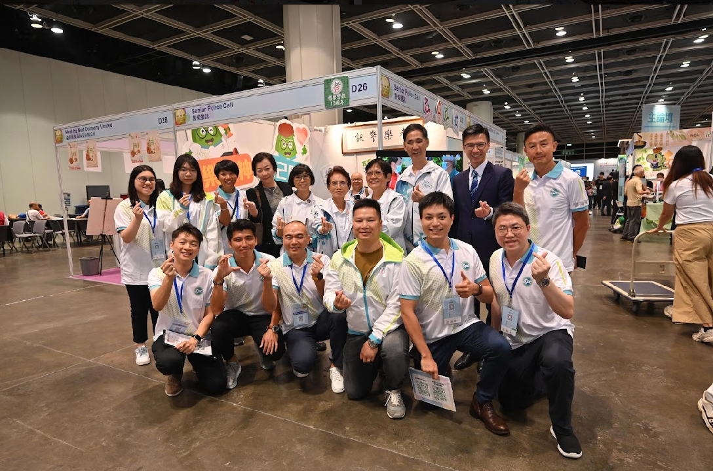
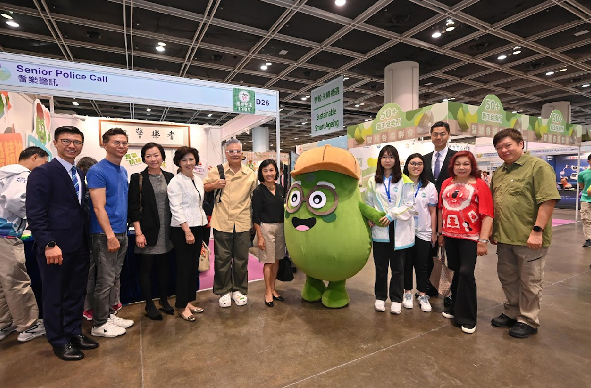
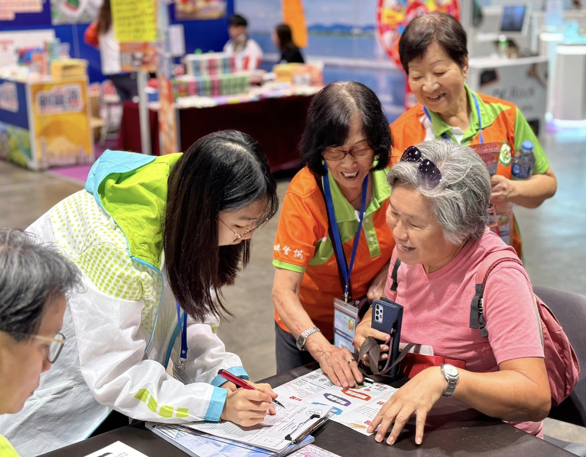
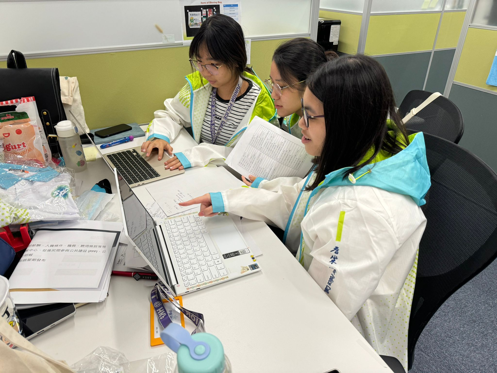

PMP Summer Internship — Assistant in SPC & CME PR
Hong Kong Police · Police Mentorship Programme
11 Jul 2024 – 23 Aug 2024
Overview
During my summer internship with the Hong Kong Police Force under the Police Mentorship Programme (PMP), I was placed in the SPC & CME PR Wing. My work centred on two major community projects: Share The Love — a blessing bag distribution programme for the elderly, and the 9th Golden Age Expo & Summit — where SPC hosted an exhibition booth.
This internship gave me hands-on exposure to public relations, event logistics, and community engagement — and taught me how to communicate with elderly audiences in a way that builds trust.
Share The Love — Blessing Bags for the Elderly
SPC was preparing to distribute blessing bags to elderly residents across different districts. As an intern, I supported both the research and creative sides of the project.
What I did:
- Conducted research on population aging to inform the project's direction and messaging.
- Contributed to the design of the blessing bag items, choosing products that would benefit elderly recipients in their daily lives.
- Wrote the abstract and script for the opening video — a new challenge for me, which taught me how to build a story and structure a narrative.
- Managed the blessing bag item list across seven versions, carefully labelling each update to ensure the latest version was always used.
Outcome: The blessing bags were finalised and distributed as planned. I developed a much stronger sense of detail management — especially when handling continuous updates under deadline pressure.
9th Golden Age Expo & Summit — SPC Booth
SPC was invited to set up a booth at the 9th Golden Age Expo & Summit. I helped prepare the booth and worked on-site during the three-day exhibition.
What I did:
- Prepared materials the day before: printed collateral, packed leaflets, and set up the booth.
- Engaged with elderly visitors at the booth, answered questions, and introduced Senior Police Call.
- Addressed concerns from elderly visitors who were initially worried the booth might be a scam or questioned why identity cards were needed.
- Supported the recruitment process throughout the three-day event.
Outcome: We recruited over 300 new members to Senior Police Call. The experience strengthened my ability to communicate with elderly audiences with empathy and patience — turning initial scepticism into trust.
What I Learned
- Adapting to new tasks: Writing a video script was outside my comfort zone, but it taught me storytelling and structure — skills I now apply in other projects.
- Detail management: Tracking seven versions of a document sounds simple, but it taught me how version control and clear labelling prevent costly mistakes.
- Communication with empathy: Elderly visitors often approached us with caution. Learning to explain our purpose clearly and respectfully was key to building trust.
- Public service mindset: Working with the Police Force's PR Wing showed me how community programmes are planned and executed — and how much work goes on behind the scenes.
Overall, this internship strengthened my confidence in event coordination, public communication, and community engagement — and gave me a clearer sense of how organisations serve the public.
Photos



